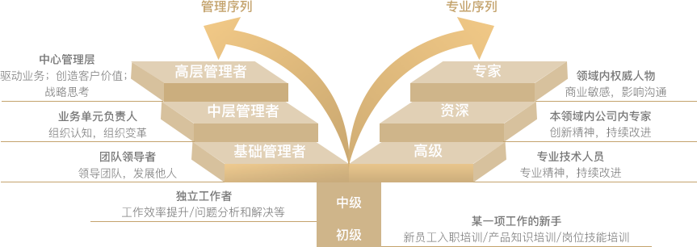

双通道职业发展体系
索菲亚集团为内部员工设计双通道职业发展体系，指明组织内员工可能的发展方向和机会，
员工可根据自身情况和组织需要，在组织设计好的职业通道中纵向或横向的发展，发挥自我优势的同时与企业一起成长。
多样化的学习成长路径
1.
在线学习平台
知识社区、易学堂等系统化在线知识平台，持续更新最新最前沿的知识和资讯，鼓励员工主动学习和分享，在员工中构建持续、常态化学习的平台 和中心，促进员工自发学习的意愿，帮助员工迅速学习成长。
2.
内训师项目
公司每年举行内部TTT培训（培训师培训），面向有兴趣从事培训的内部员工，通过对他们提供有针对性的课程，帮助其提升培训技巧、知识储备， 以发展成为内部讲师，以推广公司分享文化。
3.
益言堂
索菲亚内部知识分享平台，一个极具索菲亚特色的大讲堂，一个专属索菲亚人的知识汇聚平台。通过邀请公司高管和行业大咖，分享最前沿的行业 视野，探索最具想象力的创新设想，积聚最具逻辑的知识见解，构建索菲亚内部创新和智慧的殿堂。
4.
青藤社区
以新入职的校园毕业生为主体的活动和分享平台，通过帮助应届毕业生组织、策划、参与有特色的主题活动，发挥个人优势和才华，提升个人技能， 同时在员工中建立跨中心的沟通和学习平台。